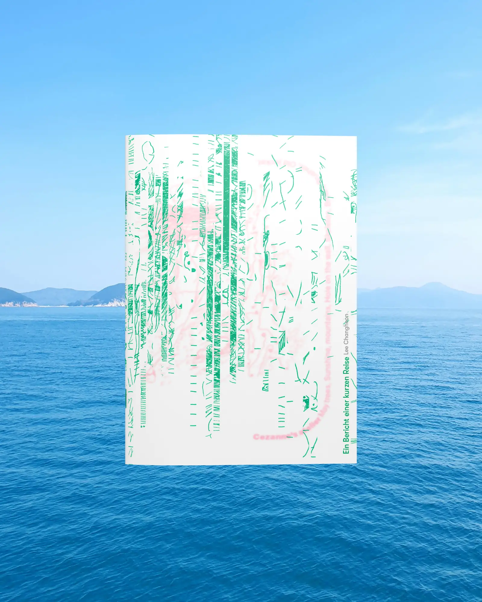
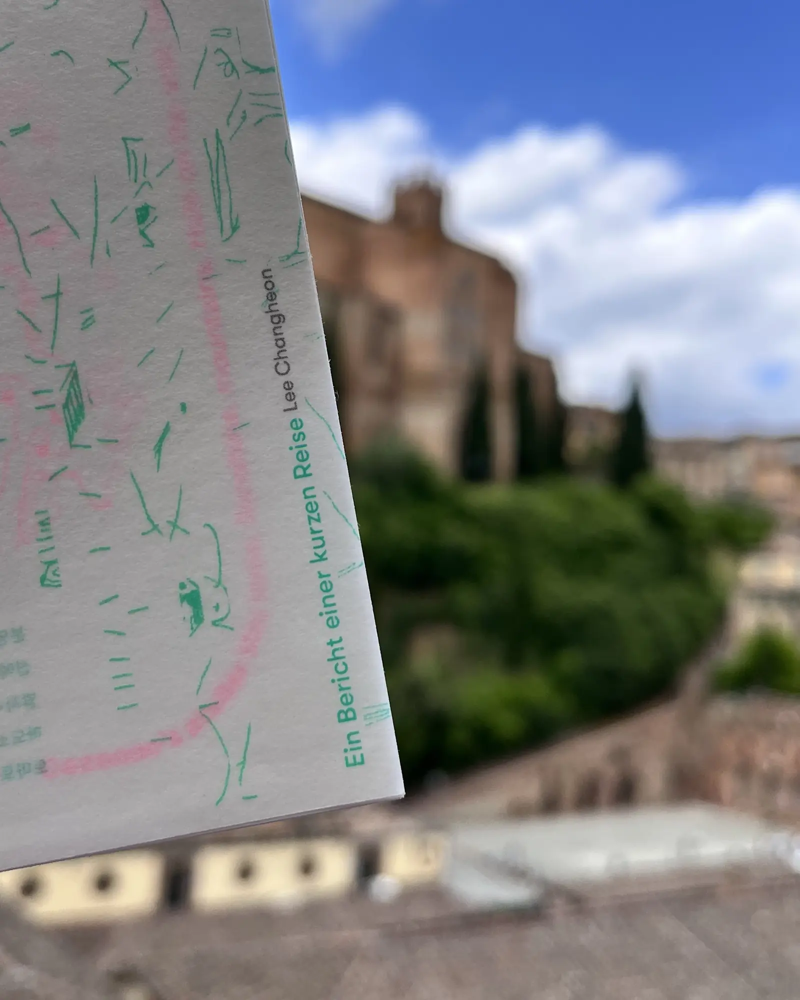
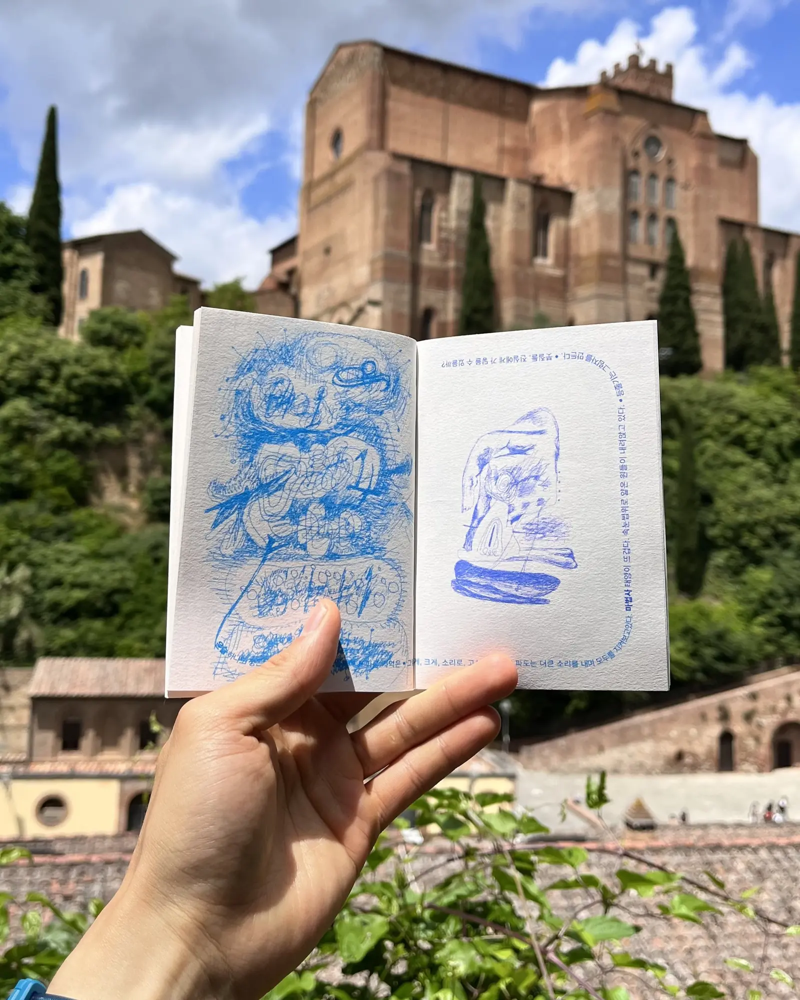
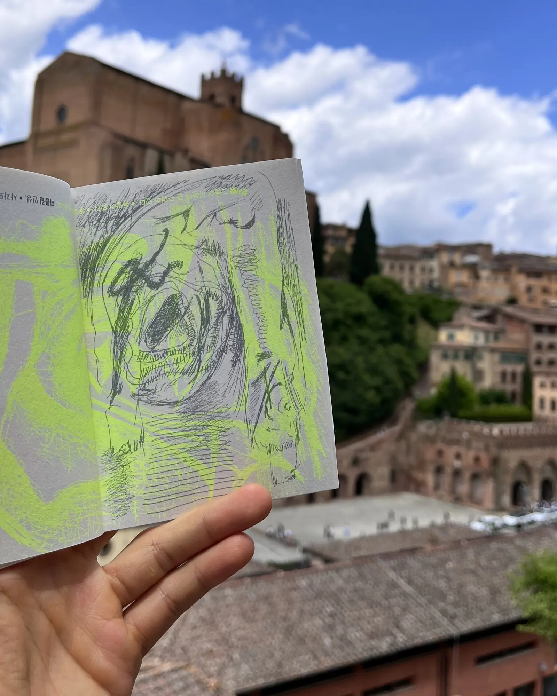
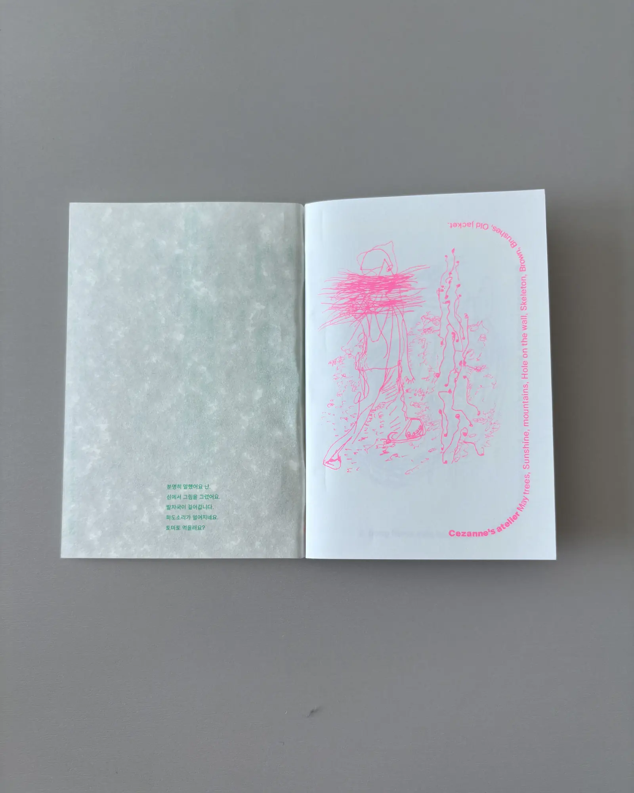
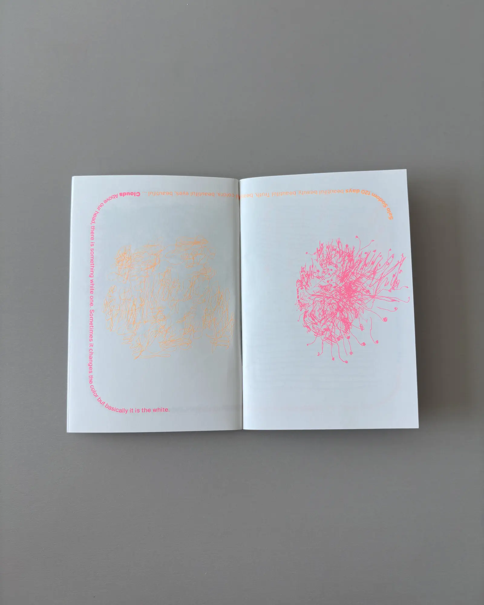
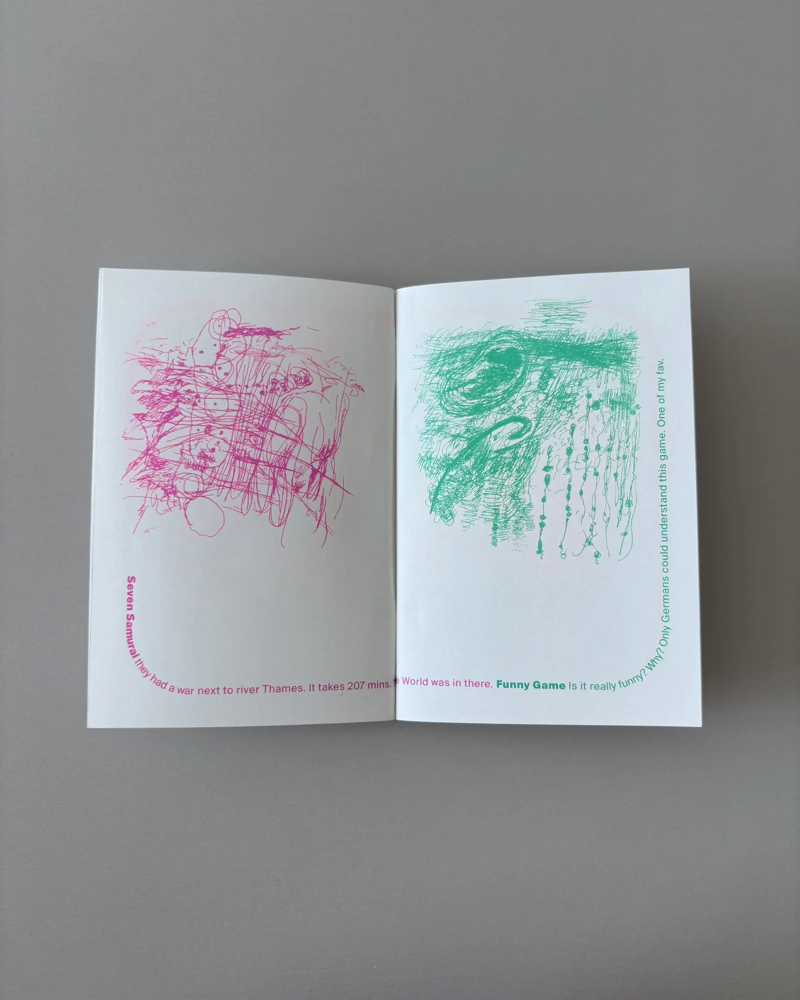

Ein Bericht einer kurzen Reise 짧은 여행의 기록

섬에서 그린 그림은 순환해 생각과 함께 돌고 돕니다. 돌고 도는 모습을 디자인에 반영했습니다. 책을 이루는 모든 재료도 돌고 돕니다. 갑자기, 우연히, 손에 잡히는, 어딘가에 쓰고 남은 종이로 책을 만듭니다.
분명히 말했어요 난. 섬에서 그림을 그렸어요. 발자국이 걸어갑니다. 파도소리가 멀어지네요. 토마토 먹을래요?
Ich habe es deutlich gesagt. Auf der Insel habe ich gezeichnet. Fußspuren gehen weiter. Das Rauschen der Wellen entfernt sich. Willst du Tomaten essen?





